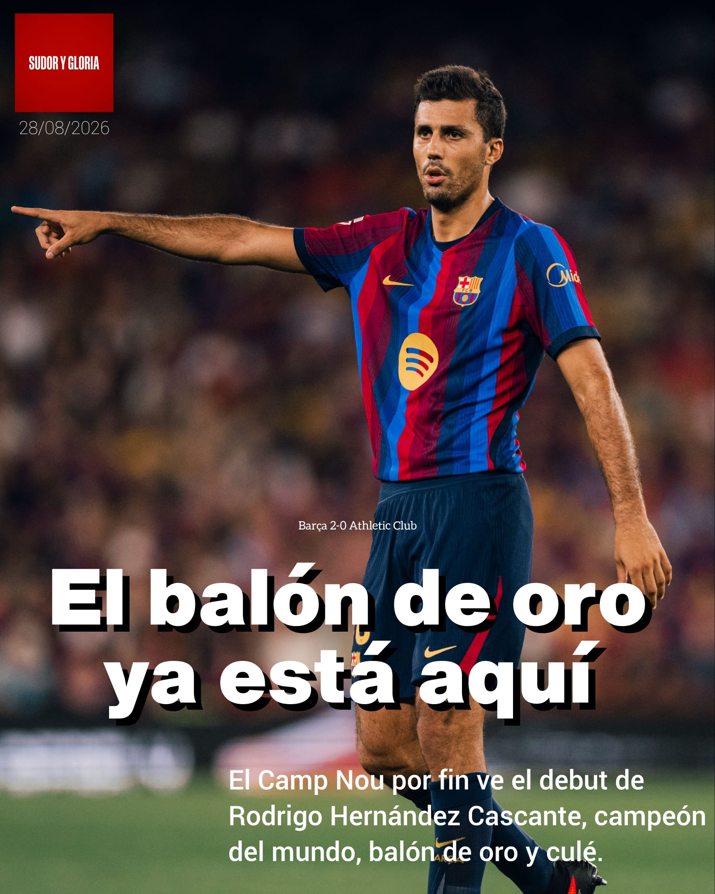
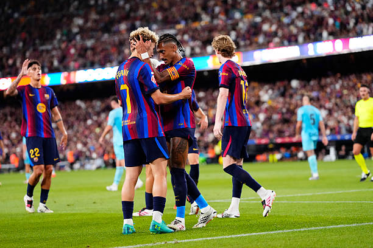

Fútbol · Por Nacho · 28 de agosto de 2026
El Barça gana con comodidad al Athletic Club (2-0)

Barça 2-0 Athletic Club en el Spotify Camp Nou
El jueves 27 de agosto se disputó el partido entre el FC Barcelona y el Athletic Club, con victoria del conjunto culer por 2-0.
Raphinha y Fermín López fueron los goleadores del encuentro.
Alineación del FC Barcelona: Joan García; Xavi Espart, Gerard Martín, Cubarsí, Eric García; Marc Bernal, Pedri, Fermín; Gordon, Lamine Yamal y Raphinha.
Alineación del Athletic Club: Unai Simón; Johaneko, Laporte, Yeray, Rincón; Canales, Jauregizar, Oihan Sancet; Nico Williams, Iñaki Williams y Guruzeta.
Primera parte
El Barça afrontaba su segundo partido de liga en casa, jornada cargada de emociones no solo por volver a jugar en el Camp Nou, sino también por la posibilidad de ver el debut del campeón del mundo, Rodrigo Hernández Cascante.
Y es que cuando tienes la oportunidad de ver a un genio que ‘salvó el fútbol’ en 2024, ganando el balón de oro por delante del Jason Derulo de Río de Janeiro sabes que vas a sentir cosas debajo del pantalón. Aun así, Hansi Flick reservó al español para la segunda parte, alineando de inicio un once que se acerca al que podría ser la formación de gala.
La primera mitad fue un partido controlado por el Barça, con ocasiones como el palo de Raphinha, el gol anulado a Pedri y el remate de Lamine Yamal que atajó Unai Simón. Finalmente, un pase exquisito de Pedri hacia Raphinha, que regateó al portero vasco, abrió el marcador en el minuto 37.
El Barça se iría con un único tanto al descanso pero podrían haber sido más si Unai Simón no se hubiese convertido en el Chopo Iribar, aún así, primera mitad decente aunque con un Lamine Yamal que no le salían las cosas.
Segunda parte
Apenas unos minutos de reanudarse el partido, Lamine Yamal estuvo apunto de convertir el segundo pero el balón dio en larguero, no le salen las cosas al de Rocafonda en este inicio liguero, aunque en la segunda mitad estuvo más activo y acertado en las jugadas.
En el minuto 63’ de partido, Rodrigo debutaba con la camiseta blaugrana y lo haría por el lugar de Raphinha, también entró Dani Olmo por Marc Bernal. Tras esto, con cada balón que recuperaba el balón de oro español generaba una pequeña erección en el pene de todos los aficionados.
También entraron Koundé, Cancelo y Adeyemi, el alemán estuvo muy bien en los pocos minutos que disputó, tuvo una ocasión clarísima que paró Neu… Unai Simón, y además dio el pase que luego acabó en gol de Fermín López.
Como dato curioso, la cara de Balde al ver que Cancelo era el elegido para entrar en vez de él, no parecía muy contento desde luego, pero se que su momento llegará si finalmente decide quedarse en el Barça.
El resultado final sería de 2-0, portería a cero, líderes, otro partidazo de Xavi Espart, Fermín y Raphinha como 9, y además vimos el debut de Rodri, partido perfecto.

Próximos encuentros
El Barça jugará en el Camp Nou ante el Rayo Vallecano el lunes 31 de agosto a las 21:30 horas.
El Athletic Club jugará en Balaídos ante el Celta de Vigo el domingo 30 de agosto a las 21:30 horas.